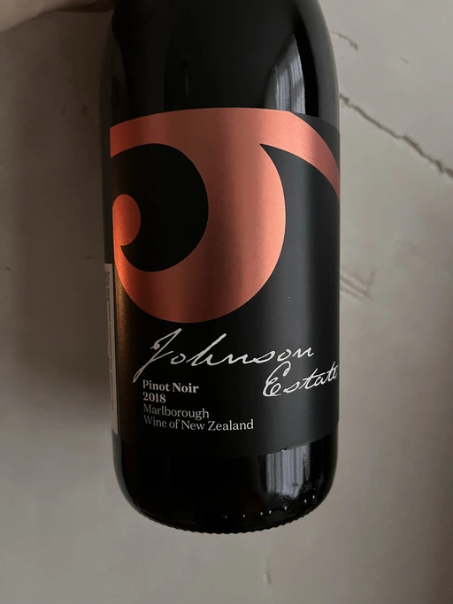

- Type
- Red Still, Dry
- Producer
- Johnson Estate
- Vintage
- 2018
- Location
- New Zealand, Marlborough
- Grapes
- Pinot Noir
- Alcohol
- 12.5
- Sugar
- 1.4
- Price
- 374 UAH
- Cellar
- 14 bottles
Ratings
2023-01-09 - 7.50
Good Pinot Noir from Marlborough. Typical bouquet of ripe strawberries, underbrush with some hints of red flowers and bloody meat. A definite surprise is a fresh (aka not tired) mouthfeel. Good balance and structure. Ripe and medium-light body. Flavours of ripe strawberries, raw meat and tomato stem. Did I mention a good price?